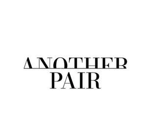

Trade Mark Journal No.2025/015 11 April 2025
UK00004161481 17 February 2025 (24,25)

- Class 24
- Textile fabrics for lingerie; Lingerie fabrics; Knitted elastic fabrics for ladies underwear; Lingerie fabric; Textile fabrics for use in the manufacture of sportswear; Woollen fabrics for use in the manufacture of trousers; Textile fabrics for the manufacture of clothing; Knitted elastic fabrics for sportswear; Woollen fabrics; Woollen fabrics for use in the manufacture of coats; Textile fabric piece goods for use in the manufacture of clothing; Textile piece goods for clothing; Textile fabrics for use in manufacture; Textile fabrics for use in the manufacture of towels; Textile used as lining for clothing; Handkerchiefs of textile; Textile handkerchiefs; Textile fabrics; Woollen fabric; Woolen fabric; Covered rubber yarn fabrics [for textile use]; Textile fabrics for use in the manufacture of curtains; Woollen fabrics for use in the manufacture of suits; Nightdress cases of textile; Textile fabrics for use in the manufacture of bedding; Textile piece goods for making-up into clothing; Woollen fabrics for use in the manufacture of jackets; Non-woven textile fabrics for use as interlinings; Textile goods for use as bedding; Elastic fabrics for clothing; Textile fabrics for use in the manufacture of pillowcases; Knitted elastic fabrics for gymnastic dresses; Towelling [textile]; Textile handkerchieves; Fabric for manufacturing men's outerwear; Textile goods, and substitutes for textile goods; Non-woven textile fabrics; Fabric for use in the manufacture of clothing.
- Class 25
- Hosiery; Maillots [hosiery]; Woollen tights; Socks and stockings; Woollen socks; Stockings (Sweat-absorbent -); Sweat-absorbent stockings; Stockings [sweat-absorbent]; Stockings; Lingerie; Corsets [underclothing]; Sweat-absorbent underclothing [underwear]; Pantyhose; Undergarments; Corsets [clothing, foundation garments]; Gussets for stockings [parts of clothing]; Woolen clothing; Knitted underwear; Footless socks; Knee-high stockings; Knitwear [clothing]; Underwear (Anti-sweat -); Anti-sweat underwear; Underclothing (Anti-sweat -); Anti-sweat underclothing; Bodices [lingerie]; Underwear; Gussets for tights [parts of clothing]; Corsets [foundation clothing]; Corsets being foundation clothing; Maternity lingerie; Sweat-absorbent underwear; Sweat-absorbent socks; Footless tights; Inner socks for footwear; Gussets for underwear [parts of clothing]; Jockstraps [underwear]; Trouser socks; Silk clothing; Sport stockings; Shapewear; Teddies [undergarments]; Girdles [corsets]; Tights; Underclothing; Sweat-absorbent underclothing; Toe socks; Anti-perspirant socks; Underwear for women; Socks; Stockings (Heel pieces for -); Heel pieces for stockings; Knitted clothing; Maternity underwear; Underclothes; Anklets [socks]; Slipper socks; Body stockings; Sock suspenders.
Malika Ferguson